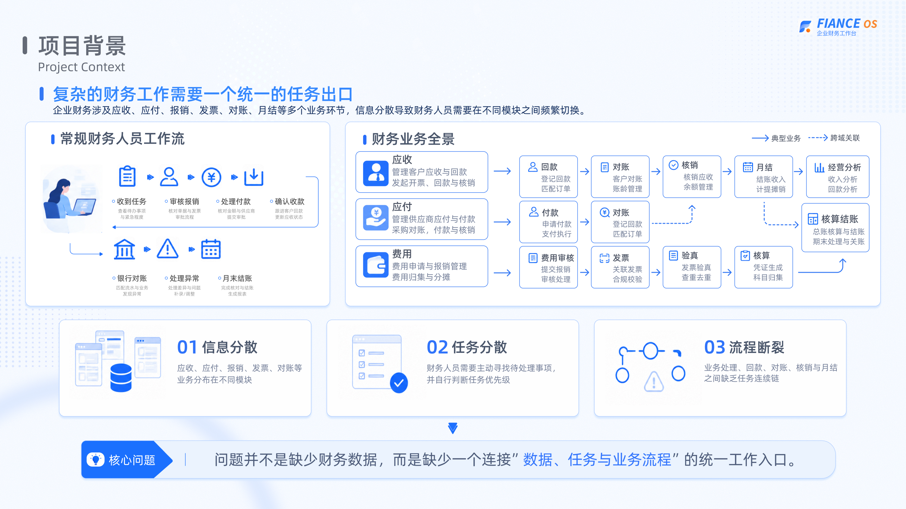
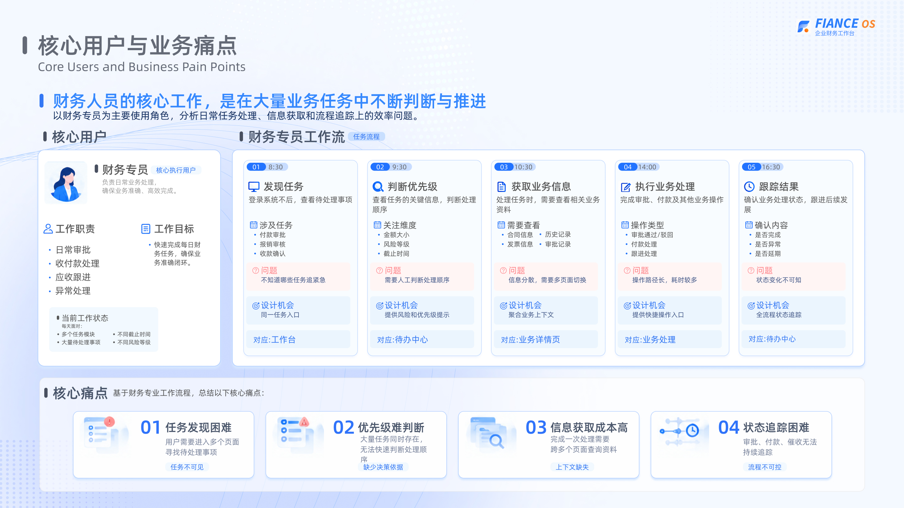
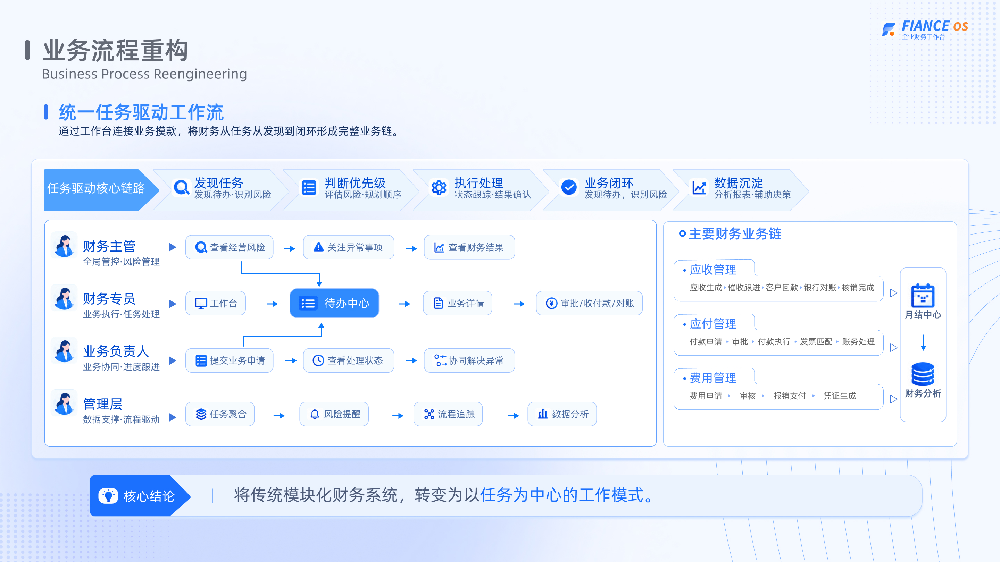
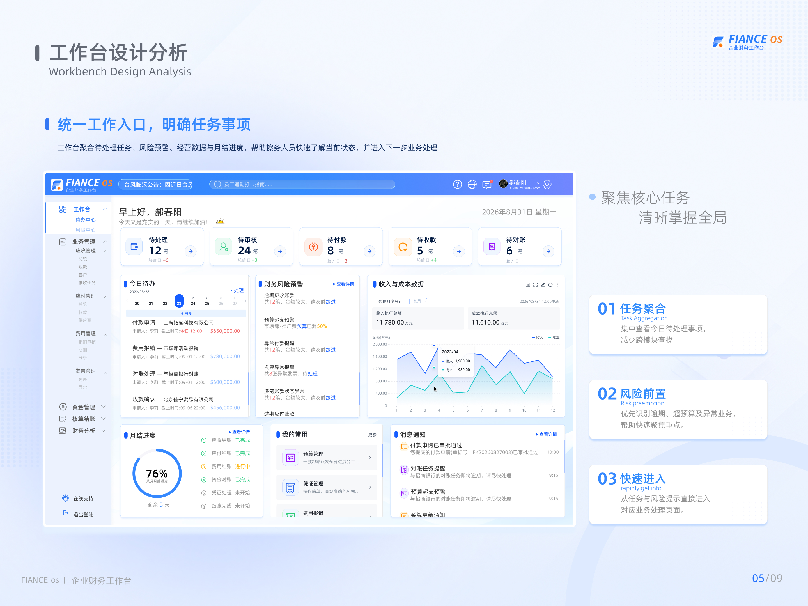
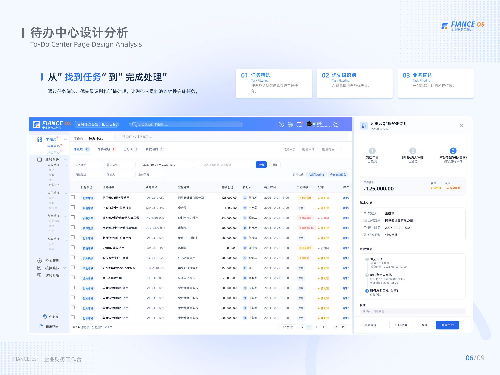
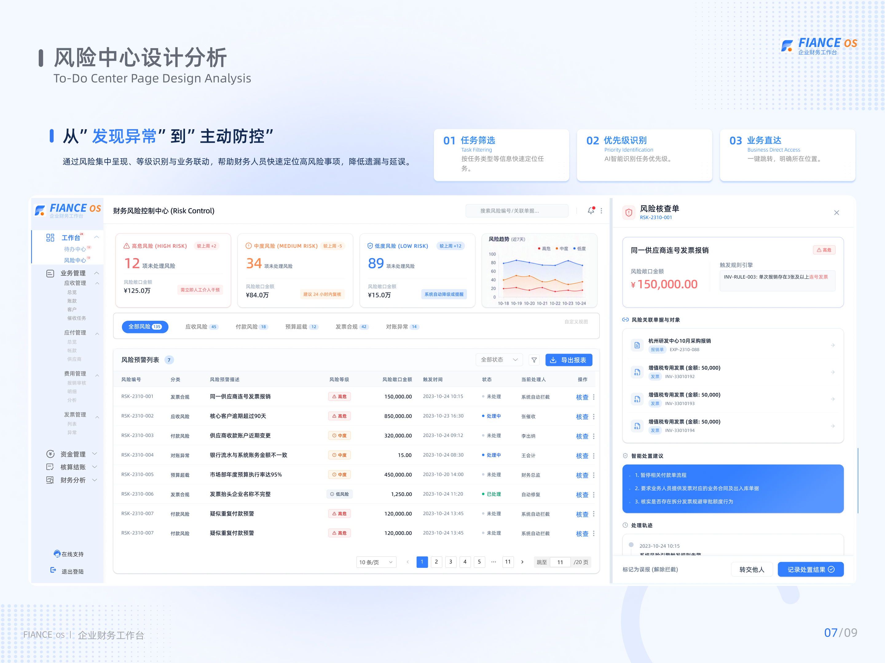
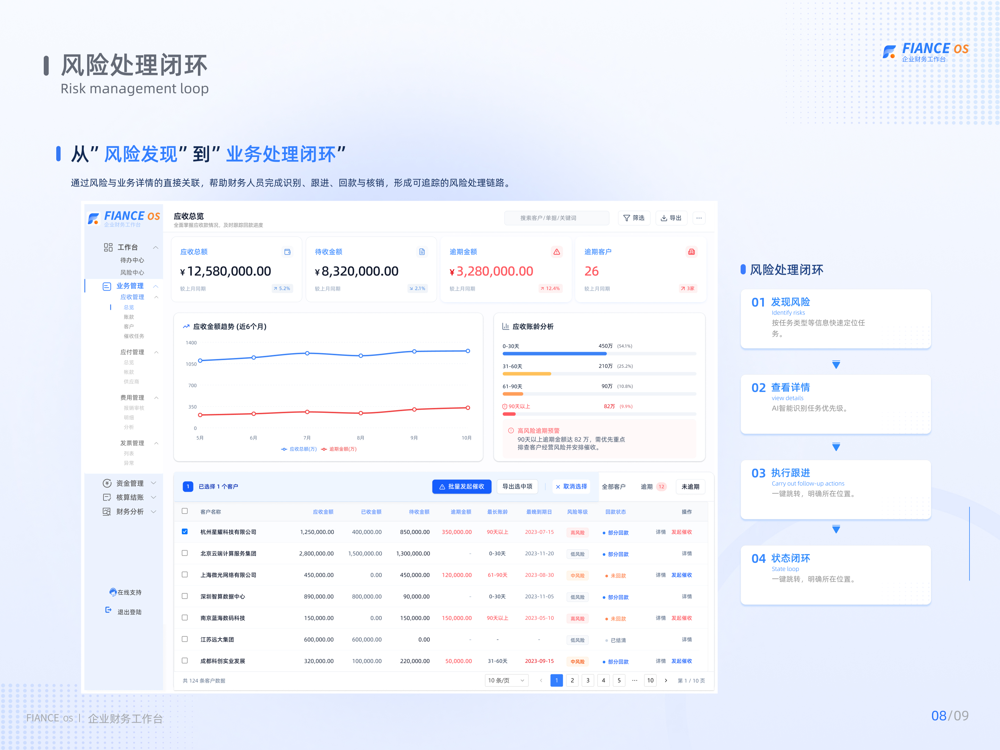
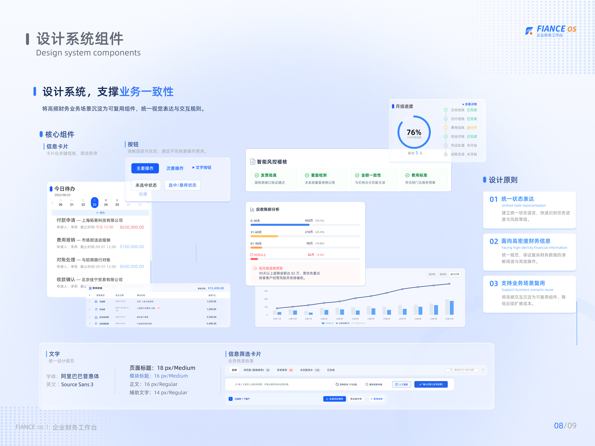
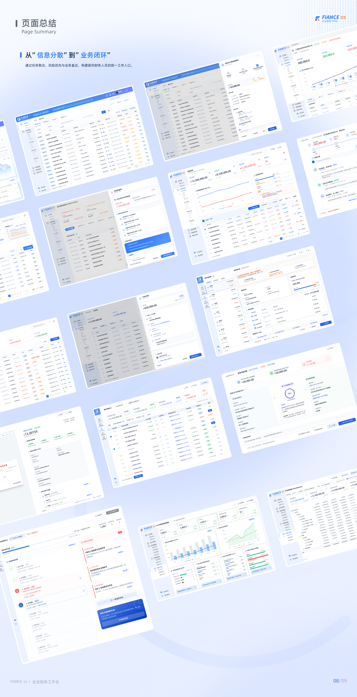

常规财务人员工作流
收到任务→审核报销→处理付款→确认收款
银行对账→处理异常→月末结账
郝春阳 · 产品体验设计
B端企业财务工作台
把应收、应付、费用、发票、对账里零散的日常动作，收成财务人员每天能直接开工的统一任务出口——少找页面，多做闭环。
01 · 项目背景
复杂的财务工作需要一个统一的任务出口。信息散落在应收、应付、发票等模块，财务人员频繁切换任务，难以形成闭环。

02 · 用户与痛点
核心执行用户是财务专员：日常审批、付款处理、应收跟进、异常处理；目标是快速完成当日任务并保证业务准确闭环。
需进入多个页面才能找到待办。
任务量大，缺少清晰决策依据。
频繁切换页面导致上下文丢失。
难以持续跟踪审批与收付款进度。

03 · 流程重构
统一任务驱动工作流：通过工作台连接业务模块，将财务任务从发现到闭环形成完整业务链。
应收生成 · 催收跟进 · 客户回款 · 银行对账 · 核销完成
付款申请 · 审批 · 付款执行 · 发票匹配 · 账务处理
费用申请 · 审核 · 报销支付 · 凭证生成 → 月结 / 分析

04 · 产品演示
左侧导航对齐原型信息架构；各模块为 Web 适配交互页（非原图照搬），可自由探索或按路径 A–D 引导体验。
05 · 完整案例页
以下为《b端财务工作台页面.pdf》对应分页，按原作品集顺序展示。





06 · 总结
从「信息碎片」到「业务闭环」——为财务人员打造统一工作入口，让数据、任务与流程重新连起来。
工作台成为每日起点，待办与风险不再散落在多个模块。
发现 → 优先级 → 执行 → 闭环 → 沉淀，形成可追踪链路。
状态、筛选、抽屉、图表组件统一，支撑高密度财务信息阅读。
